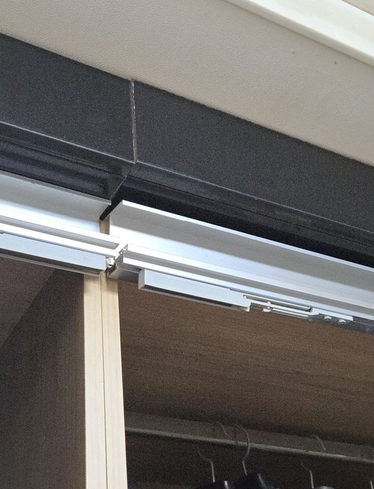
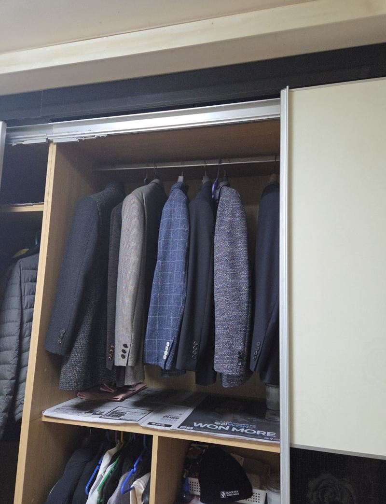
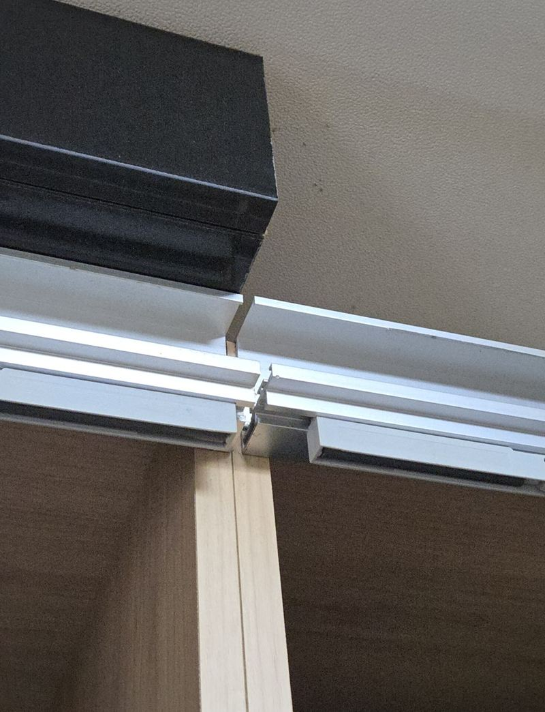
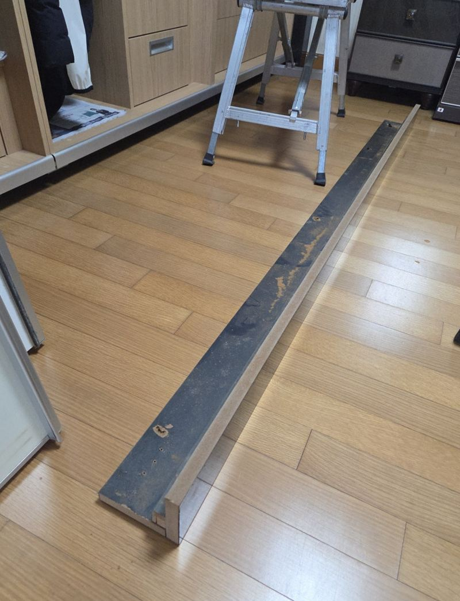
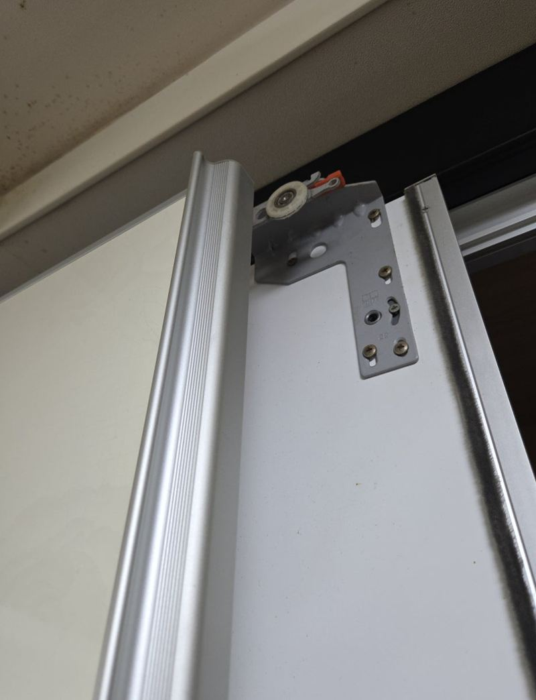
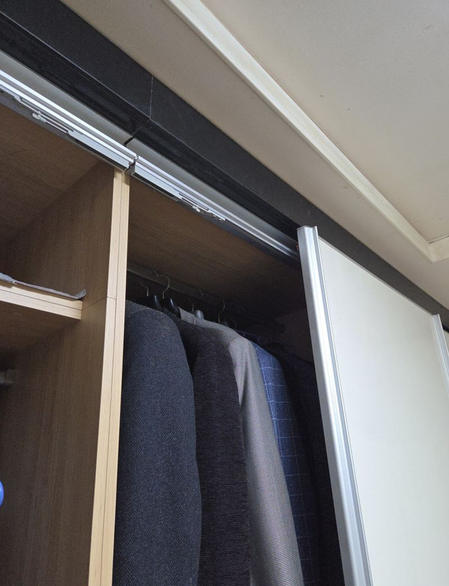
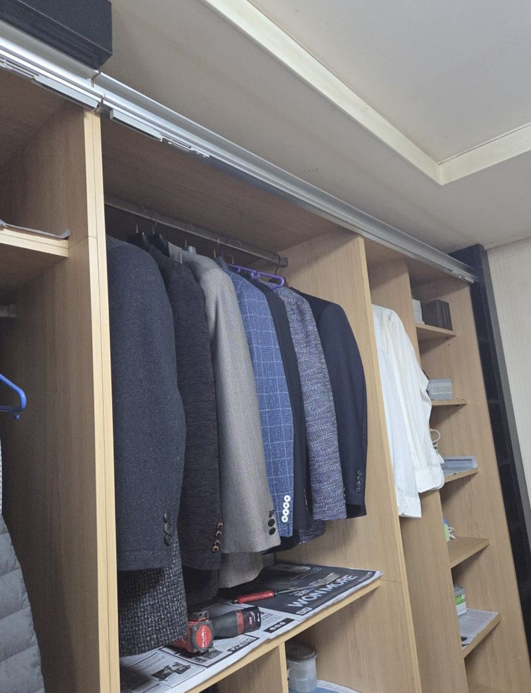

오산 슬라이딩장 소음·레일 롤러 이탈 수리 방법

 수리 전수리 후
수리 전수리 후← 밀어서 전후 비교 →
"슬라이딩장 문을 열 때마다 끼익 소리가 나고, 끝까지 안 열리고 중간에서 걸려요." 오산역 근처 아파트였어요. 오래 쓴 붙박이장이라 부품이 다 닳은 줄 아셨는데, 위를 올려다보니 문을 매다는 상부 레일 한쪽이 내려앉아 있었어요. 문을 떼고 레일 고정을 보강해 다시 달고 수평을 맞췄어요. 롤러는 멀쩡해서 그대로 썼어요.
| 현장 | 오산 아파트 안방 슬라이딩 붙박이장 |
|---|---|
| 증상 | 여닫을 때 끼익 소리, 중간에서 걸림, 문이 한쪽으로 쏠림 |
| 원인 | 댐퍼 없는 구조에서 오래 쾅쾅 닫혀 상부 레일 고정부가 약해지고 내려앉음 |
| 한 일 | 도어 탈착 → 레일 고정·수평 점검 → 고정 보강·재설치 → 수평 조정 → 도어 재설치·작동 확인 |
문이 끼익거리다 멈추는 이유
슬라이딩장 문은 위쪽 레일에 롤러로 매달려 움직여요. 이 장은 끝에서 속도를 줄여 주는 댐퍼가 없어서, 문이 닫힐 때마다 끝에 세게 부딪혔어요. 그 충격이 몇 년 쌓이며 레일을 잡은 나사가 헐거워졌고, 한쪽이 내려앉았어요.


레일이 기울면 문이 낮은 쪽으로 쏠려요. 롤러가 비스듬히 굴러가니 소리가 나고, 두 문짝이 엇갈리는 지점에서 서로 걸려 끝까지 열리지 않아요.
내려앉은 레일 고치는 순서
문짝 떼기
문을 레일에서 빼 안전하게 내려 두었어요. 큰 문은 무게가 있어 혼자 무리하게 들면 모서리가 깨질 수 있어요.
레일 고정 상태와 수평 보기
레일 전체를 따라가며 어느 지점이 헐거운지, 얼마나 기울었는지 하나씩 확인했어요.

고정 보강과 수평
다시 내려앉지 않게 고정력을 보강해 레일을 달고, 문이 지나가는 길을 따라 수평을 맞췄어요.


문 달고 여러 번 여닫기
문을 다시 걸고 끝에서 끝까지 여러 번 움직여 소리와 걸림이 없어졌는지 확인했어요.

롤러는 꼭 바꿔야 할까?
소리가 나면 롤러부터 의심하기 쉬운데, 이번처럼 레일이 원인이면 롤러는 그대로 써도 돼요. 문을 떼었을 때 바퀴가 깨지거나 한쪽이 닳아 납작해졌는지 보고 판단해요.
| 증상 | 먼저 볼 곳 |
|---|---|
| 한쪽으로 쏠리며 걸림 | 상부 레일 처짐 |
| 덜컹거리며 튐 | 롤러 바퀴 깨짐·마모 |
| 문이 레일에서 빠짐 | 레일 이탈, 롤러 고정 나사 |
걸리는 채로 계속 쓰면 레일뿐 아니라 문짝까지 휘어요. 오래된 장은 같은 부품을 구하기 어려워, 레일 수리로 끝날 일이 전체 교체로 커지기도 해요.
슬라이딩장 고장 신호
- 끝에서 쾅 소리가 나요댐퍼가 없거나 고장 난 상태라 레일에 충격이 쌓여요.
- 문 사이 틈이 위아래로 달라요레일이나 롤러 높이가 틀어진 거예요.
- 손으로 밀면 무거워요롤러가 닳았거나 레일에 이물질이 낀 경우가 많아요.
슬라이딩장 수리 질문
댐퍼를 새로 달 수 있나요?
레일 구조에 맞는 제품이 있으면 달 수 있어요. 레일 종류를 먼저 확인해요.
문이 아예 빠져 버렸어요.
억지로 끼우면 롤러가 상해요. 그대로 세워 두고 연락 주세요.
거울문도 같은 방식인가요?
네, 매다는 방식이 같으면 수리 방법도 같아요. 거울문은 더 무거워 둘이서 다뤄요.
레일에 기름을 뿌리면 되나요?
먼지가 엉겨 오히려 더 뻑뻑해질 수 있어요. 마른 걸레로 닦는 게 나아요.
아래 레일도 있는 장이에요.
아래 레일에 이물질이 끼거나 휜 경우도 많아 함께 봐요.
오래된 장인데 부품이 있을까요?
같은 부품이 없으면 맞는 규격 부품으로 바꿔 달아요. 문짝 위쪽 사진이 도움돼요.
문 아래에서 긁히는 소리가 나요.
문이 처져 아래 가이드에 닿는 경우가 많아요. 롤러 높이를 맞춰요.
문이 레일 끝에서 튀어나와요.
끝 막음 부품이 빠졌거나 깨졌을 수 있어요. 함께 확인해요.
다른 슬라이딩·붙박이장 현장
장 전체와 위쪽 레일을 올려다본 사진을 보내 주세요.
전화 상담 010-4517-9872